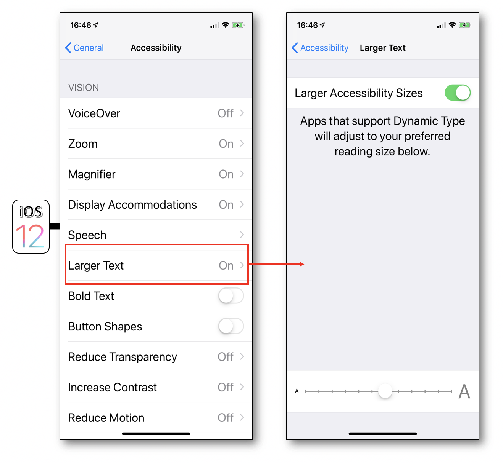

iOS developer guide
This guide aims to present the various iOS SDK accessibility options. Through different categories, this guide explains how to use the accessibility attributes / methods and provides links to the official documentation from Apple. Code snippets are also available to show you how to implement it (Swift 4, Objective C).
Text alternatives
Description
On iOS, the vocalization of an element is done through four attributes: label, hint, value and trait.
The order of vocalization is always as follows: label, value, trait and hint. This order cannot be changed and the vocalization is performed only once.
A section of this guide is dedicated to the trait, we describe here the other three:
- accessibilityLabel : the
labelredefines the text read by VoiceOver. This allows a component to be more explicit than the text displayed on the screen. For example, for a button whose title is “OK”, this attribute can indicate that the button is used to confirm an action. - accessibilityValue : the
valueof an element is by default the completion percentage (e.g. a progress bar percentage). Note that for most elements available in the SDK, this value does not need to be set (the system automatically sets the value). - accessibilityHint : the
hintdescribes the component’s behaviour. Example: “click here to get the result”.
These accessibility attributes are available via the builder interface but also programmatically. Anything inheriting from UIView has these attributes by default. These attributes accept an optional string, and are therefore easily localizable.
Example
@interface ChangeTextView() {
__weak IBOutlet UILabel * myLabel;
__weak IBOutlet UIProgressView * myProgressView;
}
@end
@implementation ChangeTextView
- (void)viewDidAppear:(BOOL)animated {
[super viewDidAppear:animated];
myLabel.accessibilityLabel = @"hello";
myLabel.accessibilityHint = @"This is an added comment.";
myProgressView.accessibilityValue = @"45 per cent";
}
@end
class ChangeTextView: UIViewController {
@IBOutlet weak var myLabel: UILabel!
@IBOutlet weak var myProgressView: UIProgressView!
override func viewDidAppear(_ animated: Bool) {
super.viewDidAppear(animated)
myLabel.accessibilityLabel = "hello"
myLabel.accessibilityHint = "This is an added comment."
myProgressView.accessibilityValue = "45 per cent"
}
}
Links
Element trait
Description
The accessibilityTraits attribute allows to specify the trait of an element to the accessibility API. Thus, it is possible to make a list item be considered as a button because it is clickable. Therefore, the accessibilityTrait attribute plays an important role on the element vocalization because the trait is vocalized by VoiceOver.
This accessibility attribute is available via the builder interface but also programmatically.
There are many available traits. The more commonly used are:
- accessibilityTraitNone : removes any semantic value to the element.
- accessibilityTraitButton : adds the “button” trait, the element is seen as a button by VoiceOver.
- accessibilityTraitLink : useful to define a label as a “link”.
- accessibilityTraitHeader : defines an element as a header (see the « Title and header » section).
- accessibilityTraitAdjustable : defines an element as an “adjustable” element, that is to say an element that users can adjust in a continuous manner, such as a slider or a picker view (see VoiceOver gestures documentation).
Example
- (void)customTraits() {
//Specified UIPageControl with the ’ajustable’ trait.
pageControl.accessibilityTraits = UIAccessibilityTraitAdjustable;
//Added header.
defaultHeaderViewCell.accessibilityTraits = UIAccessibilityTraitHeader;
//Many traits possible combination.
onePageButton.accessibilityTraits = UIAccessibilityTraitButton + UIAccessibilityTraitSelected;
}
func customTraits() {
//Specified UIPageControl with the ’ajustable’ trait.
pageControl.accessibilityTraits = UIAccessibilityTraitAdjustable
//Added header.
defaultHeaderViewCell.accessibilityTraits = UIAccessibilityTraitHeader
//Many traits possible combination.
onePageButton.accessibilityTraits = UIAccessibilityTraitButton + UIAccessibilityTraitSelected
}
Link
Hide elements from accessibility
Description
It is possible via an accessibility attribute to hide elements from accessibility tools (e.g. VoiceOver). By extension, it is possible to force some elements to be visible to accessibility tools.
- isAccessibilityElement : boolean to specify that an element is visible or not to the Accessibility API (VoiceOver or other).
- accessibilityElementsHidden : boolean to indicate that the children elements of the target element are visible or not to the Accessibility API.
- accessibilityViewIsModal : boolean that can make visible or not the sibling elements of the target element to the Accessibility API. Very useful for making accessible custom popup views for example.
The accessibilityElement attribute is available via the interface builder but can also be used directly through the code. The other two attributes are available only through the code.
Example
A red square will be drawn and contain two other squares (blue and yellow) in order to apply the attributes defined hereabove.

- (void)viewDidAppear:(BOOL)animated {
[super viewDidAppear:animated];
//Creation of an element inside which 2 other children elements will be inserted.
CGRect parentViewRect = CGRectMake(100.0, 100.0, 40.0, 40.0);
UIView * myParentView = [[UIView alloc]initWithFrame:parentViewRect];
myParentView.backgroundColor = [UIColor redColor];
[UIApplication.sharedApplication.keyWindow addSubview:myParentView];
//The target element musn't be accessible so as to be considered as a container to its children elements.
//If this attribute is 'YES', the target element will be the only one accessible element.
myParentView.isAccessibilityElement = NO;
//The elements contained in the target element won't be accessible even if they're defined as such.
//If this attribute is 'NO' and the previous one is 'NO', only the children elements will be accessible.
myParentView.accessibilityElementsHidden = NO;
[self createViewWithColor:[UIColor yellowColor]
inside:myParentView];
[self createViewWithColor:[UIColor blueColor]
inside:myParentView];
}
- (void)createViewWithColor:(UIColor*)color
inside:(UIView*)parentView {
float delta = (color == [UIColor yellowColor]) ? 0.0 : 20.0;
CGRect rect = CGRectMake(10.0 + delta, 10.0 + delta, 10.0, 10.0);
UIView * theView = [[UIView alloc]initWithFrame:rect];
theView.backgroundColor = color;
[parentView addSubview:theView];
theView.isAccessibilityElement = YES;
}
override func viewDidAppear(_ animated: Bool) {
super.viewDidAppear(animated)
//Creation of an element inside which 2 other children elements will be inserted.
let parentViewRect = CGRect.init(x: 100.0,
y: 100.0,
width: 40.0,
height: 40.0)
let myParentView = UIView.init(frame: parentViewRect)
myParentView.backgroundColor = .red
UIApplication.shared.keyWindow?.addSubview(myParentView)
//The target element musn't be accessible so as to be considered as a container to its children elements.
//If this attribute is 'true', the target element will be the only one accessible element.
myParentView.isAccessibilityElement = true
//The elements contained in the target element won't be accessible even if they're defined as such.
//If this attribute is 'false' and the previous one is 'false', only the children elements will be accessible.
myParentView.accessibilityElementsHidden = false
self.createViewWithColor(.yellow, inside: myParentView)
self.createViewWithColor(.blue, inside: myParentView)
}
func createViewWithColor(_ color:UIColor, inside parentView:UIView) {
let delta:CGFloat = ((color == .yellow) ? 0.0 : 20.0)
let rect = CGRect.init(x: 10.0 + delta,
y: 10.0 + delta,
width: 10.0,
height: 10.0)
let theView = UIView.init(frame: rect)
theView.backgroundColor = color
parentView.addSubview(theView)
theView.isAccessibilityElement = true
}
Links
Trigger a vocalization
Description
It is very easy to trigger vocalizations with VoiceOver. Note that we are talking about VoiceOver vocalization and not TTS (Text To Speech) that can operate whether VoiceOver is on or off.
To trigger a vocalization, just call the UIAccessibilityPostNotification method passing the notification allowing to trigger a vocalization (UIAccessibilityAnnouncementNotification) and the string to vocalize as parameters.
Note: the vocalization is done in the system’s language.
Example
UIAccessibilityPostNotification(UIAccessibilityAnnouncementNotification, @"This is a VoiceOver message.");
UIAccessibilityPostNotification(UIAccessibilityAnnouncementNotification, "This is a VoiceOver message.")
Links
Check accessibility options state
Description
On iOS, it is possible to check the accessibility options state. Is VoiceOver activated? Is the audio-mono mode activated? Several methods can help you to check with that. They are part of the UIKit framework.
The most useful method is UIAccessibilityIsVoiceOverRunning which allows to know whether VoiceOver is activated.
Many other methods are available in the links hereafter.
Exemple
BOOL isVoiveOverRunning = (UIAccessibilityIsVoiceOverRunning() ? 1 : 0);
BOOL isSwitchControlRunning = (UIAccessibilityIsSwitchControlRunning() ? 1 : 0);
NSLog(@"VoiceOver is %d and SwitchControl is %d.", isVoiveOverRunning, isSwitchControlRunning);
let isVoiceOverRunning = (UIAccessibilityIsVoiceOverRunning() ? 1 : 0)
let isSwitchControlRunning = (UIAccessibilityIsSwitchControlRunning() ? 1 : 0)
print("VoiceOver is \(isVoiceOverRunning) and SwichControl is \(isSwitchControlRunning).")
Links
UIAccessibilityDarkerSystemColorsEnabledUIAccessibilityIsAssistiveTouchRunningUIAccessibilityIsBoldTextEnabledUIAccessibilityIsClosedCaptioningEnabledUIAccessibilityIsGrayscaleEnabledUIAccessibilityIsGuidedAccessEnabledUIAccessibilityIsInvertColorsEnabledUIAccessibilityIsMonoAudioEnabledUIAccessibilityIsReduceMotionEnabledUIAccessibilityIsReduceTransparencyEnabledUIAccessibilityIsShakeToUndoEnabledUIAccessibilityIsSpeakScreenEnabledUIAccessibilityIsSpeakSelectionEnabledUIAccessibilityIsSwitchControlRunningUIAccessibilityIsVoiceOverRunning
Notify a content change
Description
When there is a content change in the current page, it is possible to notify the accessibility API using several types of notifications. To do that, we must send the change notification to the accessibility API using the following method: UIAccessibilityPostNotification.
There are several types of change notifications but the two most commonly used are:
- UIAccessibilityLayoutChangedNotification : notifies that a part of the page has changed with 2 possible incoming parameters (a
NSStringor aUIObject). With aNSString, the notification behaves like a UIAccessibilityAnnouncementNotification with a VoiceOver vocalization. With aUIObject, focus is shifted to the user interface element. This notification is very similar to the UIAccessibilityAnnouncementNotification but should come as a result of dynamic content being deleted or added to the current view. - UIAccessibilityScreenChangedNotification : notifies that the whole page has changed including
nilor aUIObjectas incoming parameters.
Withnil, the first accessible element in the page is focused. With aUIObject, focus is shifted to the specified element with a VoiceOver. This notification comes along with a vocalization including a sound like announcing a new page.
Example
//The element'myLabel' is focused and vocalized with its new value.
- (IBAction)tapHere:(UIButton *)sender {
myLabel.accessibilityLabel = @"This is a new label.";
UIAccessibilityPostNotification(UIAccessibilityLayoutChangedNotification, myLabel);
}
//The first accessible element in the page is focused and vocalized with a sound like announcing a new page.
- (IBAction)clic:(UIButton *)sender {
UIAccessibilityPostNotification(UIAccessibilityScreenChangedNotification, nil);
}
//The element'myLabel' is focused and vocalized with its new value.
@IBAction func tapHere(_ sender: UIButton) {
myLabel.accessibilityLabel = "This is a new label."
UIAccessibilityPostNotification(UIAccessibilityLayoutChangedNotification, myLabel)
}
//The first accessible element in the page is focused and vocalized with a sound like announcing a new page.
@IBAction func clic(_ sender: UIButton) {
UIAccessibilityPostNotification(UIAccessibilityScreenChangedNotification, mySecondLabel)
}
Links
UIAccessibilityPostNotificationUIAccessibilityLayoutChangedNotificationUIAccessibilityScreenChangedNotificationUIAccessibilityPageScrolledNotification
Change the vocalization language
Description
To change the vocalization language of VoiceOver for a word or a sentence, one can use the accessibilityLanguage attribute.
Available through the UIAccessibility informal protocol, this attribute allows to specify a language for a dedicated text.
For instance, if we use this attribute on a UILabel, it will be vocalized by VoiceOver in the language set on this attribute.
Example
- (IBAction)tapHere:(UIButton *)sender {
myLabel.accessibilityLanguage = @"fr";
myLabel.accessibilityLabel = @"Ceci est un nouveau label. Merci.";
UIAccessibilityPostNotification(UIAccessibilityLayoutChangedNotification, myLabel);
}
@IBAction func tapHere(_ sender: UIButton) {
myLabel.accessibilityLanguage = "fr"
myLabel.accessibilityLabel = "Ceci est un nouveau label. Merci."
UIAccessibilityPostNotification(UIAccessibilityLayoutChangedNotification, myLabel)
}
Link
Modify the focus area of VoiceOver
Description
In the case of dynamically modified element or component not inheriting from UIView, it is possible to modify the focus area of accessibility of this element, i.e. the area VoiceOver highlights when focusing an element.
- accessibilityFrame : sets the area via a rectangle (
CGRect). Usually, for an element inheriting fromUIView, this area is the « visible » part of the view. - accessibilityPath : equivalent to
AccessibilityFramebut sets the area via Bezier curves. - accessibilityActivationPoint : the activation « point » of an element for accessibility tools. By default, this point is at the centre of the element.
Example

float xVal;
float yVal;
float widthVal;
float heightVal;
- (void)viewDidAppear:(BOOL)animated {
[super viewDidAppear:animated];
xVal = myLabel.accessibilityFrame.origin.x;
yVal = myLabel.accessibilityFrame.origin.y;
widthVal = myLabel.accessibilityFrame.size.width;
heightVal = myLabel.accessibilityFrame.size.height;
}
//First way to enlarge the focus area.
- (IBAction)tapHere:(UIButton *)sender {
myLabel.accessibilityFrame = CGRectMake(xVal,
yVal,
widthVal + 100.0,
heightVal+ 100.0);
UIAccessibilityPostNotification(UIAccessibilityLayoutChangedNotification, myLabel);
}
//Second way to enlarge the focus area (Bezier).
- (IBAction)clic:(UIButton *)sender {
UIBezierPath * bezierPath = [UIBezierPath bezierPath];
[bezierPath moveToPoint:CGPointMake(xVal, yVal)];
[bezierPath addLineToPoint:CGPointMake(xVal + widthVal + 100.0,
yVal)];
[bezierPath addLineToPoint:CGPointMake(xVal + widthVal + 100.0,
yVal + heightVal+ 100.0)];
[bezierPath addLineToPoint:CGPointMake(xVal,
yVal + heightVal+ 100.0)];
[bezierPath closePath];
myLabel.accessibilityPath = bezierPath;
UIAccessibilityPostNotification(UIAccessibilityLayoutChangedNotification, myLabel);
}
var xVal: CGFloat = 0.0
var yVal: CGFloat = 0.0
var widthVal: CGFloat = 0.0
var heightVal: CGFloat = 0.0
override func viewDidAppear(_ animated: Bool) {
super.viewDidAppear(animated)
xVal = myLabel.accessibilityFrame.origin.x;
yVal = myLabel.accessibilityFrame.origin.y;
widthVal = myLabel.accessibilityFrame.size.width;
heightVal = myLabel.accessibilityFrame.size.height;
}
//Première façon d'augmenter la zone de focus.
@IBAction func clicHere(_ sender: UIButton) {
myLabel.accessibilityFrame = CGRect.init(x: xVal,
y: yVal,
width: widthVal + 100.0,
height: heightVal + 100.0)
UIAccessibilityPostNotification(UIAccessibilityLayoutChangedNotification, myLabel)
}
//Seconde façon d'augmenter la zone de focus (Bézier).
@IBAction func clic(_ sender: UIButton) {
let bezierPath = UIBezierPath.init()
bezierPath.move(to: CGPoint.init(x: xVal, y: yVal))
bezierPath.addLine(to: CGPoint.init(x: xVal + widthVal + 100.0,
y: yVal))
bezierPath.addLine(to: CGPoint.init(x: xVal + widthVal + 100.0,
y: yVal + heightVal + 100.0))
bezierPath.addLine(to: CGPoint.init(x: xVal,
y: yVal + heightVal + 100.0))
bezierPath.close()
myLabel.accessibilityPath = bezierPath
UIAccessibilityPostNotification(UIAccessibilityScreenChangedNotification, myLabel)
}
Links
Grouping elements
Description
Grouping elements may be used to vocalize the bundle once and to associate a dedicated action to it. In this case, a view must be created to encapsulate all the elements and an action must be implemented (only the container must be an accesible element). Another grouping elements case could use the shouldGroupAccessibilityChildren attribute which is a Boolean that indicates whether VoiceOver must group its children views. This allows making unique vocalizations or define a particular reading order for a part of the page (see Reading order section for further information).
Example
We wish to obtain a 'label' and a 'switch control' as one unique block.

- (void)viewDidAppear:(BOOL)animated {
[super viewDidAppear:animated];
//View that will encapsulate the 'label' and the 'Switch Control'.
CGRect wrapFrame = CGRectUnion(myLabel.frame, mySwitchControl.frame);
wrapView = [[UIView alloc]initWithFrame: wrapFrame];
wrapView.isAccessibilityElement = YES;
wrapView.accessibilityLabel = myLabel.accessibilityLabel;
wrapView.accessibilityValue = mySwitchControl.accessibilityValue;
//Gesture for action on the previous created view.
UITapGestureRecognizer * tapGesture = [[UITapGestureRecognizer alloc] initWithTarget:self
action:@selector(changeValue:)];
tapGesture.numberOfTapsRequired = 1;
[wrapView addGestureRecognizer:tapGesture];
[self.view addSubview:wrapView];
}
- (void)changeValue:(UITapGestureRecognizer *)sender {
mySwitchControl.on = ![mySwitchControl.accessibilityValue boolValue];
}
override func viewDidAppear(_ animated: Bool) {
super.viewDidAppear(animated)
//View that will encapsulate the 'label' and the 'Switch Control'.
let wrapFrame = myLabel.frame.union(mySwitchControl.frame)
let wrapView = UIView.init(frame: wrapFrame)
wrapView.isAccessibilityElement = true
wrapView.accessibilityLabel = myLabel.accessibilityLabel
wrapView.accessibilityValue = mySwitchControl.accessibilityValue
//Gesture for action on the previous created view.
let tapGesture = UITapGestureRecognizer.init(target: self,
action: #selector(changeValue(sender:)))
tapGesture.numberOfTapsRequired = 1;
wrapView.addGestureRecognizer(tapGesture)
self.view.addSubview(wrapView)
}
@objc func changeValue(sender: UITapGestureRecognizer) {
let switchBoolValue = NSString(string:mySwitchControl.accessibilityValue!).boolValue
mySwitchControl.setOn(!switchBoolValue,
animated: false)
}
Link
Accessibility events
Description
iOS sends several accessibility events to the applications. They are sent when accessibility options are changed. For example, if VoiceOver is deactivated, the running applications will receive the UIAccessibilityVoiceOverStatusDidChange event. This is very useful when used simultaneously with UIAccessibilityIsVoiceOverRunning.
Let's say the application behaves differently when VoiceOver is turned on. This is detected by the UIAccessibilityIsVoiceOverRunning method. What happens if VoiceOver is disabled? This is when the system events can be used. By listening to these events, it is possible to dynamically change how the application behaves.
Example
In this example, a method is fired when VoiceOver or Switch Control status has changed.
- (void)viewDidAppear:(BOOL)animated {
[super viewDidAppear:animated];
[[NSNotificationCenter defaultCenter] addObserver:self
selector:@selector(methodToBeCalled:)
name:UIAccessibilitySwitchControlStatusDidChangeNotification
object:nil];
[[NSNotificationCenter defaultCenter] addObserver:self
selector:@selector(methodToBeCalled:)
name:UIAccessibilityVoiceOverStatusDidChangeNotification
object:nil];
}
- (void)methodToBeCalled:(NSNotification *)notification {
NSArray * checkStatus = @[@"NOK", @"OK"];
NSLog(@"SWITCH CONTROL is %@ and VOICE OVER is %@",
checkStatus[UIAccessibilityIsSwitchControlRunning()],
checkStatus[UIAccessibilityIsVoiceOverRunning()]);
}
override func viewDidAppear(_ animated: Bool) {
super.viewDidAppear(animated)
NotificationCenter.default.addObserver(self,
selector: #selector(methodToBeCalled(notification:)),
name: .UIAccessibilitySwitchControlStatusDidChange,
object: nil)
NotificationCenter.default.addObserver(self,
selector: #selector(methodToBeCalled(notification:)),
name: .UIAccessibilityVoiceOverStatusDidChange,
object: nil)
}
@objc private func methodToBeCalled(notification: Notification) {
let switchControlStatus = (UIAccessibilityIsSwitchControlRunning() ? "OK" : "NOK")
let voiceOverStatus = (UIAccessibilityIsVoiceOverRunning() ? "OK" : "NOK")
print("SWITCH CONTROL is \(switchControlStatus) and VOICE OVER is \(voiceOverStatus).")
}
Link
All accessibility events are available on the official documentation from Apple.
Text size
Description
Since iOS7, it is possible to make the text size dynamic according to the phone settings.  The following steps should be respected in order to easily use this API :
Choose the system font to facilitate your programing even if the use of other fonts is well assisted by the
UIFontMetricsnew class (iOS11).__weak IBOutlet UILabel * fontHeadline; __weak IBOutlet UILabel * fontFootNote; //Use of the default native font for a header. UIFont * myFont = [UIFont preferredFontForTextStyle:UIFontTextStyleHeadline]; //Personal font definition for a header. UIFont * fontHead = [UIFont fontWithName:@"Chalkduster" size:30.0]; UIFontMetrics * fontHeadMetrics = [[UIFontMetrics alloc]initForTextStyle:UIFontTextStyleHeadline]; fontHeadline.font = [fontHeadMetrics scaledFontForFont:fontHead];@IBOutlet weak var fontHeadline: UILabel! @IBOutlet weak var fontFootNote: UILabel! //Use of the default native font for a header. let myFont = UIFont.preferredFont(forTextStyle: .headline) //Personal font definition for a header. let fontHead = UIFont(name: "Chalkduster", size: 30.0) let fontHeadMetrics = UIFontMetrics(forTextStyle: .headline) fontHeadline.font = fontHeadMetrics.scaledFont(for: fontHead!)Listen to the font size settings change event UIContentSizeCategoryDidChange or directly use the property adjustsFontForContentSizeCategory to have an automatic update of your system font size if you're programming in iOS10 (this attribute applies to custom fonts only with the
UIFontMetricsclass). Note that the traitCollectionDidChange method that belongs to theUITraitEnvironmentinformal protocol may also be used in this context because it will be called as soon as the iOS interface environment changes (class/content size, portrait/landscape).//Listens to the notification dealing with the font size changing from the mobile settings. [[NSNotificationCenter defaultCenter] addObserver:self selector:@selector(methodToBeCalled:) name:UIContentSizeCategoryDidChangeNotification object:nil]; //Automatic changing of the font size without listening to the previous notification. fontHeadline.adjustsFontForContentSizeCategory = YES; - (void)methodToBeCalled:(NSNotification *)notification { //When handling the font size change event, you must redisplay the affected elements. fontFootNote.font = [UIFont preferredFontForTextStyle:UIFontTextStyleFootnote]; }//Listens to the notification dealing with the font size changing from the mobile settings. NotificationCenter.default.addObserver(self, selector:#selector(methodToBeCalled(notification:)), name: .UIContentSizeCategoryDidChange, object: nil) //Automatic changing of the font size without listening to the previous notification. fontHeadline.adjustsFontForContentSizeCategory = true @objc func methodToBeCalled(notification: Notification) { //When handling the font size change event, you must redisplay the affected elements. fontFootNote.font = UIFont.preferredFont(forTextStyle: .footnote) }- Be careful that the containers fit their contents: using constraints is the best way to perform this task using dynamic values.
Links
Graphical elements size
Description
Exactly like text, images and tab/tool bar items have a scalable size thanks to accessibility settings but only since iOS11 with Xcode 9.
The example below to illustrate these new features is obtained by following the steps hereafter :
1. Under Xcode, import the image to be enlarged with a pdf extension and a x1 resolution in the xcassets catalog.
2. In the new Image Set, tick Preserve Vector Data and specify Single Scale as Scales attribute :
 3. If a storyboard is used for this image, tick
3. If a storyboard is used for this image, tick Adjusts Image Size in the Image View section, otherwise put the adjustsImageSizeForAccessibilityContentSizeCategory image property to true in code :
 4. If a tab bar or a tool bar is used in the application, first repeat the previous 3 steps for each image included in the items to be enlarged in the middle of the screen and then link the image to its appropriate item :
4. If a tab bar or a tool bar is used in the application, first repeat the previous 3 steps for each image included in the items to be enlarged in the middle of the screen and then link the image to its appropriate item :
 WARNING : don't forget to check your layout with these new images larger sizes.
WARNING : don't forget to check your layout with these new images larger sizes.
Example
An application with a tab bar, whose second bar item displays the Orange logo (added Aspect Fit content mode and constraints to stretch the image view), is created to test the features exposed in the description.
With the Larger Accessibility Sizes activation in the settings (see the previous section), one can easily note in the application :
- A larger Orange image size.
- A larger version of the bar item in an overlay if you touch and hold over it.

Link
Reading order
Description
Redefining the VoiceOver reading order is done using the UIAccessibilityContainer protocol. The idea is to have a table of elements that defines the reading order of the elements. It is often very useful to use the shouldGroupAccessibilityElement attribute so we have a precise order but for a part of the view only (the rest of the view will be read using the native order provided by VoiceOver).
Example
The best way to illustrate this feature is the keyboard whose keys order isn't necessary the appropriate one.
Here's the desired order : 1, 2, 3, 4, 7, 6, 8, 9, 5.

__weak IBOutlet UIView * blueBlock;
__weak IBOutlet UIView * greyColumn;
- (void)viewDidAppear:(BOOL)animated {
[super viewDidAppear:animated];
//Reads the first three numbers in the grey column.
greyColumn.shouldGroupAccessibilityChildren = YES;
//Reads 6, 8, 9 and 5 in this order inside the blue block.
blueBlock.isAccessibilityElement = NO;
blueBlock.accessibilityElements = @[key_6,
key_8,
key_9,
key_5];
}
@IBOutlet weak var greyColumn: UIView!
@IBOutlet weak var blueBlock: UIView!
override func viewDidAppear(_ animated: Bool) {
super.viewDidAppear(animated)
//Reads the first three numbers in the grey column.
greyColumn.shouldGroupAccessibilityChildren = true
//Reads 6, 8, 9 and 5 in this order inside the blue block.
blueBlock.isAccessibilityElement = false
blueBlock.accessibilityElements = [key_6,
key_8,
key_9,
key_5]
}
Links
Date, time and numbers
Description
Using VoiceOver for reading date, time and numbers may become rapidly a headache if some steps fade into obscurity.
Date and time vocalization
The rendering isn't natural if the date or time data are imported text in a label.
 Incoming data must be formatted to obtain a natural and understandable descriptive vocalization.
Incoming data must be formatted to obtain a natural and understandable descriptive vocalization.

NSDateFormatter * dateFormatter = [[NSDateFormatter alloc]init];
[dateFormatter setDateFormat:@"dd/MM/yyyy HH:mm"];
NSDate * date = [dateFormatter dateFromString:@"01/04/2015 05:30"];
dateLabel.text = [NSDateFormatter localizedStringFromDate:date
dateStyle:NSDateFormatterShortStyle
timeStyle:NSDateFormatterNoStyle];
dateLabel.accessibilityLabel = [NSDateFormatter localizedStringFromDate:date
dateStyle:NSDateFormatterMediumStyle
timeStyle:NSDateFormatterNoStyle];
hourLabel.text = [NSDateFormatter localizedStringFromDate:date
dateStyle:NSDateFormatterNoStyle
timeStyle:NSDateFormatterShortStyle];
NSDateComponents * hourComponents = [[NSCalendar currentCalendar] components:NSCalendarUnitHour | NSCalendarUnitMinute
fromDate:date];
hourLabel.accessibilityLabel = [NSDateComponentsFormatter localizedStringFromDateComponents:hourComponents
unitsStyle:NSDateComponentsFormatterUnitsStyleSpellOut];
let dateFormatter = DateFormatter()
dateFormatter.dateFormat = "dd/MM/yyyy HH:mm"
let date = dateFormatter.date(from: "01/04/2015 05:30")
dateLabel.text = DateFormatter.localizedString(from: date!,
dateStyle: .short,
timeStyle: .none)
dateLabel.accessibilityLabel = DateFormatter.localizedString(from: date!,
dateStyle: .medium,
timeStyle: .none)
hourLabel.text = DateFormatter.localizedString(from: date!,
dateStyle: .none,
timeStyle: .short)
let hourComponents = Calendar.current.dateComponents([.hour, .minute],
from: date!)
hourLabel.accessibilityLabel = DateComponentsFormatter.localizedString(from: hourComponents,
unitsStyle: .spellOut)
Numbers vocalization
If a number is imported as is in a labeltext, the vocalization will be made on each figure rendering a final value that may be hard to be well understood.
 As the previous chapter dealing with date and time, the incoming data must be formatted to be analyzed and vocalized according to the proper value of the explained number.
As the previous chapter dealing with date and time, the incoming data must be formatted to be analyzed and vocalized according to the proper value of the explained number.

NSNumber * numberValue = @54038921.7;
NSNumberFormatter * numberFormatter = [[NSNumberFormatter alloc]init];
numberFormatter.numberStyle = NSNumberFormatterDecimalStyle;
numberLabel.text = [numberFormatter stringFromNumber:numberValue];
numberLabel.accessibilityLabel = [NSNumberFormatter localizedStringFromNumber:numberValue
numberStyle:NSNumberFormatterSpellOutStyle];
let numberValue = NSNumber(value: 54038921.7)
numberLabel.text = NumberFormatter.localizedString(from: numberValue,
number: .decimal)
numberLabel.accessibilityLabel = NumberFormatter.localizedString(from: numberValue,
number: .spellOut)
Phone numbers vocalization
Once more, formatting data is an essential step for a phone number vocalization including the special cases of the "0" figures.
The example hereunder deals with the french dialing but the rationale behind may be applied to any international type of dialing format.
 The idea of this format is based on a comma separation of each pair of figures that will provide the vocal punctuation.
The idea of this format is based on a comma separation of each pair of figures that will provide the vocal punctuation.

NSString * phoneNumberValue = @"06.11.22.33.06";
NSArray * phoneNumberElts = [phoneNumberValue componentsSeparatedByString:@"."];
NSNumberFormatter * nbFormatter = [[NSNumberFormatter alloc]init];
nbFormatter.numberStyle = NSNumberFormatterSpellOutStyle;
NSMutableString * spelledOutString = [[NSMutableString alloc]init];
[phoneNumberElts enumerateObjectsUsingBlock:^(id _Nonnull obj,
NSUInteger idx,
BOOL * _Nonnull stop) {
NSString * elt = (NSString *)obj;
if (idx != 0) {
[spelledOutString appendString:@","];
}
if ([elt hasPrefix:@"0"]) {
NSString * firstFigure = [nbFormatter stringFromNumber:@([[elt substringToIndex:1] integerValue])];
NSString * secondFigure = [nbFormatter stringFromNumber:@([[elt substringFromIndex:1] integerValue])];
[spelledOutString appendString:firstFigure];
[spelledOutString appendString:secondFigure];
} else {
[spelledOutString appendString:[nbFormatter stringFromNumber:@([elt integerValue])]];
}
}];
phoneNumberLabel.text = phoneNumberValue;
phoneNumberLabel.accessibilityLabel = spelledOutString;
let phoneNumberValue = "06.11.22.33.06"
let phoneNumberElts = phoneNumberValue.components(separatedBy: ".")
let nbFormatter = NumberFormatter()
nbFormatter.numberStyle = .spellOut
var spelledOutString = String()
for (index, elt) in phoneNumberElts.enumerated() {
if (index != 0) {
spelledOutString.append(",")
}
if (elt.hasPrefix("0")) {
let firstFigureValue = Int(String(elt[elt.startIndex]))!
let firstFigure = nbFormatter.string(from: NSNumber(value:firstFigureValue))
spelledOutString.append(firstFigure!)
let secondFigureValue = Int(String(elt[elt.index(elt.startIndex, offsetBy: 1)]))!
let secondFigure = nbFormatter.string(from: NSNumber(value:secondFigureValue))
spelledOutString.append(secondFigure!)
} else {
let figure = nbFormatter.string(from: NSNumber(value:Int(elt)!))
spelledOutString.append(figure!)
}
}
phoneNumberLabel.text = phoneNumberValue
phoneNumberLabel.accessibilityLabel = spelledOutString
Switch Control
Description
The accessibility Switch Control feature revolves around the point mode and the item mode.
 The element selection using the item mode works fine when the user interface isn't too complicated and uses native elements.
However, this mode may not be helpful according to the rationale behind some specific use cases and then needs to be customized.
The element selection using the item mode works fine when the user interface isn't too complicated and uses native elements.
However, this mode may not be helpful according to the rationale behind some specific use cases and then needs to be customized.
Customization of the item mode
The Xcode InterfaceBuilder shows the structure used for the example hereunder :
 The following steps represent the customization :
The following steps represent the customization :
- Creation of 2 groups {Test_1 + Test_2 ; Btn 5 + Btn 6} that must be selectable in the item mode.
- Within the other elements, only Btn 1 et Btn 2 must be separately accessible.
@interface ViewController2 ()
@property (weak, nonatomic) IBOutlet UIStackView * btnsParentView;
@property (weak, nonatomic) IBOutlet UIButton * btn1;
@property (weak, nonatomic) IBOutlet UIButton * btn2;
@property (weak, nonatomic) IBOutlet UIButton * btn5;
@property (weak, nonatomic) IBOutlet UIButton * btn6;
@end
@implementation ViewController2
- (void)viewDidAppear:(BOOL)animated {
[super viewDidAppear:animated];
//Creation of the first group 'testWrap' COMBINING the 'Test_1' and 'Test_2' buttons.
UIButton * testOneButton = [self.view viewWithTag:1];
UIButton * testTwoButton = [self.view viewWithTag:2];
CGRect testWrapFrame = CGRectUnion(testOneButton.frame, testTwoButton.frame);
UIAccessibilityElement * testWrap = [[UIAccessibilityElement alloc]initWithAccessibilityContainer:self.view];
testWrap.isAccessibilityElement = false;
testWrap.accessibilityFrame = testWrapFrame;
testWrap.accessibilityNavigationStyle = UIAccessibilityNavigationStyleCombined; //Property specific to Switch Control.
testWrap.accessibilityElements = @[testOneButton, testTwoButton];
//Creation of the 'secondGroup' SEPARATING the first two buttons.
CGRect secondGroupRect = CGRectUnion(_btn1.frame, _btn2.frame);
CGRect secondGroupFrame = [_btnsParentView convertRect:secondGroupRect
toView:self.view];
UIAccessibilityElement * secondGroup = [[UIAccessibilityElement alloc]initWithAccessibilityContainer:_btnsParentView];
secondGroup.isAccessibilityElement = false;
secondGroup.accessibilityFrame = secondGroupFrame;
secondGroup.accessibilityNavigationStyle = UIAccessibilityNavigationStyleSeparate;
secondGroup.accessibilityElements = @[_btn1, _btn2];
//Creation of the 'thirdGroup' COMBINING the last two buttons.
CGRect thirdGroupRect = CGRectUnion(_btn5.frame, _btn6.frame);
CGRect thirdGroupFrame = [_btnsParentView convertRect:thirdGroupRect
toView:self.view];
UIAccessibilityElement * thirdGroup = [[UIAccessibilityElement alloc]initWithAccessibilityContainer:_btnsParentView];
thirdGroup.isAccessibilityElement = false;
thirdGroup.accessibilityFrame = thirdGroupFrame;
thirdGroup.accessibilityNavigationStyle = UIAccessibilityNavigationStyleCombined;
thirdGroup.accessibilityElements = @[_btn5, _btn6];
self.view.accessibilityElements = @[testWrap,
secondGroup,
thirdGroup];
}
@end
class ViewController: UIViewController {
@IBOutlet weak var btnsParentView: UIStackView!
@IBOutlet weak var btn1: UIButton!
@IBOutlet weak var btn2: UIButton!
@IBOutlet weak var btn5: UIButton!
@IBOutlet weak var btn6: UIButton!
override func viewDidAppear(_ animated: Bool) {
super.viewDidAppear(animated)
//Creation of the first group 'testWrap' COMBINING the 'Test_1' and 'Test_2' buttons.
let testOneButton = self.view.viewWithTag(1) as? UIButton
let testTwoButton = self.view.viewWithTag(2) as? UIButton
let testWrapFrame = testOneButton?.frame.union((testTwoButton?.frame)!)
let testWrap = UIAccessibilityElement(accessibilityContainer: self.view)
testWrap.isAccessibilityElement = false
testWrap.accessibilityFrame = testWrapFrame!
testWrap.accessibilityNavigationStyle = .combined //Property specific to Switch Control.
testWrap.accessibilityElements = [testOneButton!, testTwoButton!]
//Creation of the 'secondGroup' SEPARATING the first two buttons.
let secondGroupRect = btn1.frame.union(btn2.frame)
let secondGroupFrame = btnsParentView.convert(secondGroupRect,
to: self.view)
let secondGroup = UIAccessibilityElement(accessibilityContainer: btnsParentView)
secondGroup.isAccessibilityElement = false
secondGroup.accessibilityFrame = secondGroupFrame
secondGroup.accessibilityNavigationStyle = .separate
secondGroup.accessibilityElements = [btn1, btn2]
//Creation of the 'thirdGroup' COMBINING the last two buttons.
let thirdGroupRect = btn5.frame.union(btn6.frame)
let thirdGroupFrame = btnsParentView.convert(thirdGroupRect,
to: self.view)
let thirdGroup = UIAccessibilityElement(accessibilityContainer: btnsParentView)
thirdGroup.isAccessibilityElement = false
thirdGroup.accessibilityFrame = thirdGroupFrame
thirdGroup.accessibilityNavigationStyle = .combined
thirdGroup.accessibilityElements = [btn5, btn6]
self.view.accessibilityElements = [testWrap,
secondGroup,
thirdGroup]
}
}
The visual rendering is exposed hereunder :
 Once activated, the created groups allow to reach directly the elements which they contain.
Once activated, the created groups allow to reach directly the elements which they contain.
Link
Continuous adjustable values
Description
Graphics like picker, stepper or slider have the ability to continuously change the value they provide.
 It's hard to render what's happening when the changing isn't graphically or vocally notified.
The following methodology to resolve this problem for blind people using VoiceOver may be the same for these three graphics, that's why only the
It's hard to render what's happening when the changing isn't graphically or vocally notified.
The following methodology to resolve this problem for blind people using VoiceOver may be the same for these three graphics, that's why only the stepper will be handled.
Creating a stepper with a label to display its value provides the following rendering :
 The focus must change to :
The focus must change to :
- Get each element that increases or decreases the value.
- Know the value provided by the
label.
Moreover, there is no real time notification dealing with the value changing.
Nothing is definitely blocking in use but these latest remarks lead to a new design for this example that used to be so simple.
The rationale behind is to be able to change the stepper value, to be informed of this modification and to know the new value thanks to a single and unique object.
Group the stepperand the label (a StackView should do the job) then put UIAccessibilityTraitAdjustable as a new trait for this new accessible group.
This trait is MANDATORY linked to the accessibilityIncrement() and accessibilityDecrement() methods that must be implemented to define the continous way of changing the value.
As a result, all the previous constraints are removed and a hint is natively provided by this trait to mention the proper way of using this object.

- To get this result, the container class {
stepper+label} is first created to allow the delegation for the future value changing.
-===== StepperWrapper.h =====-
NS_ASSUME_NONNULL_BEGIN
@class StepperWrapper;
@protocol AdjustableForAccessibilityDelegate
- (void)adjustableDecrementForView:(StepperWrapper *)view;
- (void)adjustableIncrementForView:(StepperWrapper *)view;
@end
@interface StepperWrapper : UIStackView
@property(nonatomic,weak) id delegate;
@end
NS_ASSUME_NONNULL_END
-===== StepperWrapper.m =====-
NS_ASSUME_NONNULL_BEGIN
@implementation StepperWrapper
- (instancetype)initWithCoder:(NSCoder *)coder {
self = [super initWithCoder:coder];
self.isAccessibilityElement = YES;
self.accessibilityTraits = UIAccessibilityTraitAdjustable;
return self;
}
- (void)accessibilityDecrement {
[_delegate adjustableDecrementForView:self];
}
- (void)accessibilityIncrement {
[_delegate adjustableIncrementForView:self];
}
@end
NS_ASSUME_NONNULL_END
protocol AdjustableForAccessibilityDelegate: class {
func adjustableDecrementFor(_ view: StepperWrapper)
func adjustableIncrementFor(_ view: StepperWrapper)
}
class StepperWrapper: UIStackView {
weak var delegate: AdjustableForAccessibilityDelegate?
override init(frame: CGRect) {
super.init(frame: frame)
}
required init(coder: NSCoder) {
super.init(coder: coder)
isAccessibilityElement = true
accessibilityTraits = UIAccessibilityTraitAdjustable
}
override func accessibilityDecrement() {
delegate?.adjustableDecrementFor(self)
}
override func accessibilityIncrement() {
delegate?.adjustableIncrementFor(self)
}
}
- Next, the two methods of the implemented protocol must be defined before updating and vocally presenting the new value in the ViewController.
NS_ASSUME_NONNULL_BEGIN
@interface ViewController ()
@property (weak, nonatomic) IBOutlet UIStepper * stepperNoAccess;
@property (weak, nonatomic) IBOutlet UILabel * stepperValueNoAccess;
@property (weak, nonatomic) IBOutlet StepperWrapper * stepperStackViewAccess;
@property (weak, nonatomic) IBOutlet UIStepper * stepperAccess;
@property (weak, nonatomic) IBOutlet UILabel * stepperValueAccess;
@end
@implementation ViewController
- (void)viewDidLoad {
[super viewDidLoad];
_stepperStackViewAccess.delegate = self;
_stepperStackViewAccess.accessibilityLabel = @"Increase or decrease the value";
_stepperStackViewAccess.accessibilityValue = _stepperValueAccess.text;
}
- (void)adjustableDecrementForView:(StepperWrapper *)view {
_stepperAccess.value -= _stepperAccess.stepValue;
[self updateStepperValue];
}
- (void)adjustableIncrementForView:(StepperWrapper *)view {
_stepperAccess.value += _stepperAccess.stepValue;
[self updateStepperValue];
}
- (void) updateStepperValue {
_stepperValueAccess.text = [NSString stringWithFormat:@"Value = %0.1f",_stepperAccess.value];
_stepperStackViewAccess.accessibilityValue = _stepperValueAccess.text;
}
@end
NS_ASSUME_NONNULL_END
class ViewController: UIViewController, AdjustableForAccessibilityDelegate {
@IBOutlet weak var stepperStackViewAccess: StepperWrapper!
@IBOutlet weak var stepperAccess: UIStepper!
@IBOutlet weak var stepperValueAccess: UILabel!
override func viewDidLoad() {
super.viewDidLoad()
stepperStackViewAccess.delegate = self
stepperStackViewAccess.accessibilityLabel = "Increase or decrease the value"
stepperStackViewAccess.accessibilityValue = stepperValueAccess.text
}
func adjustableDecrementFor(_ view: StepperWrapper) {
stepperAccess.value -= stepperAccess.stepValue
updateStepperValue()
}
func adjustableIncrementFor(_ view: StepperWrapper) {
stepperAccess.value += stepperAccess.stepValue
updateStepperValue()
}
private func updateStepperValue() {
stepperValueAccess.text = "Value = \(stepperAccess.value)"
stepperStackViewAccess.accessibilityValue = stepperValueAccess.text
}
}